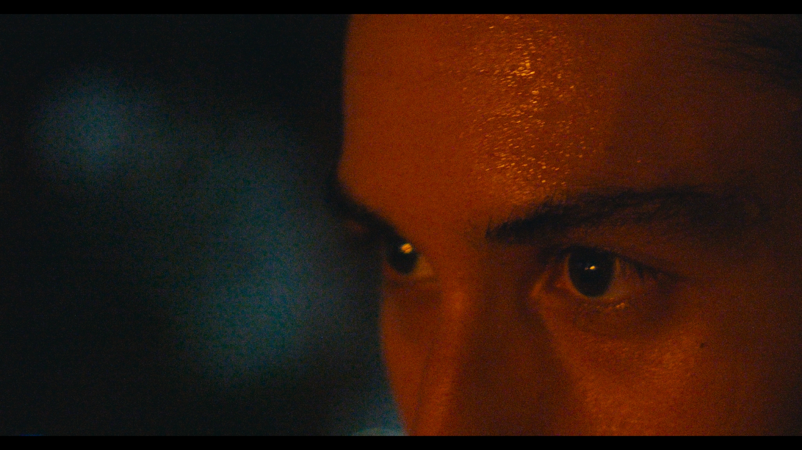
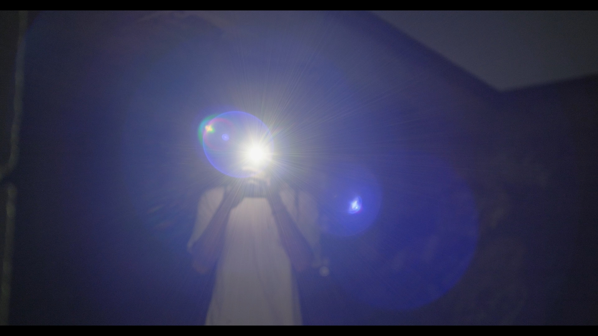
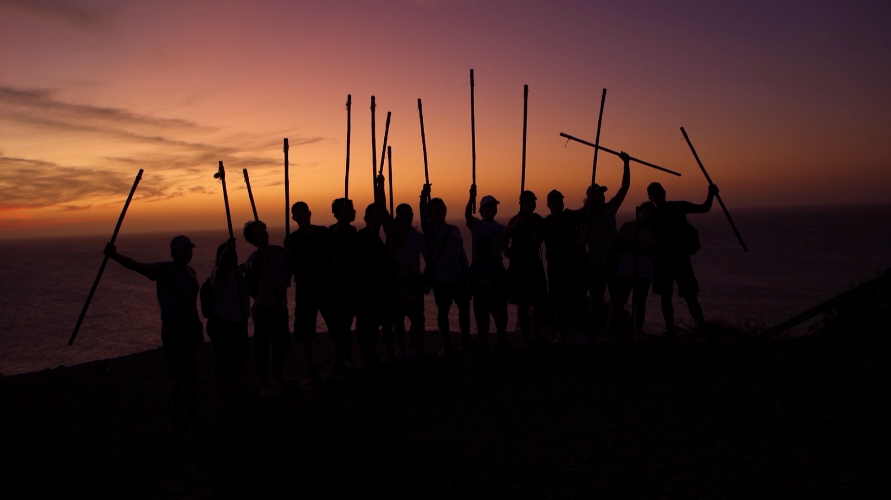
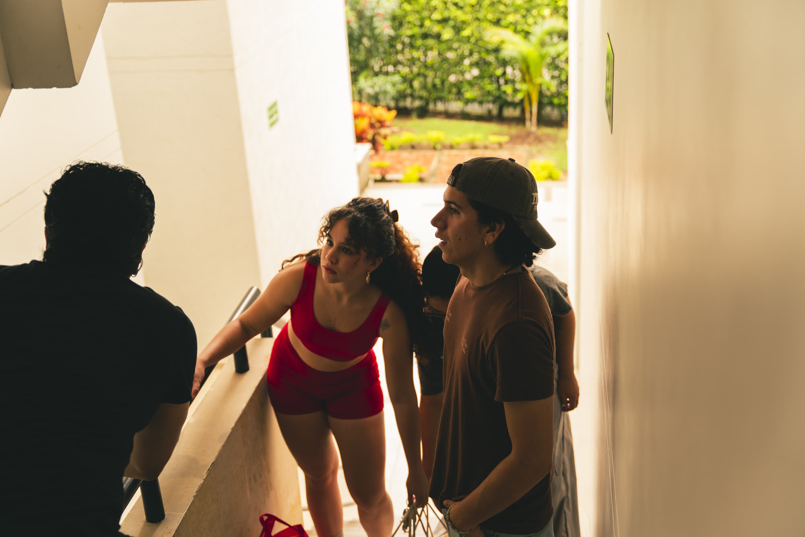
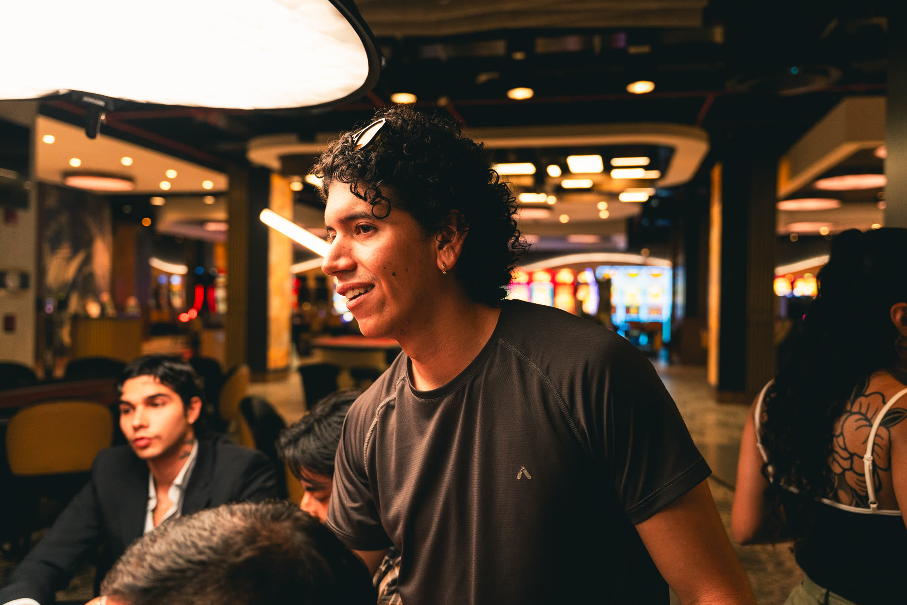
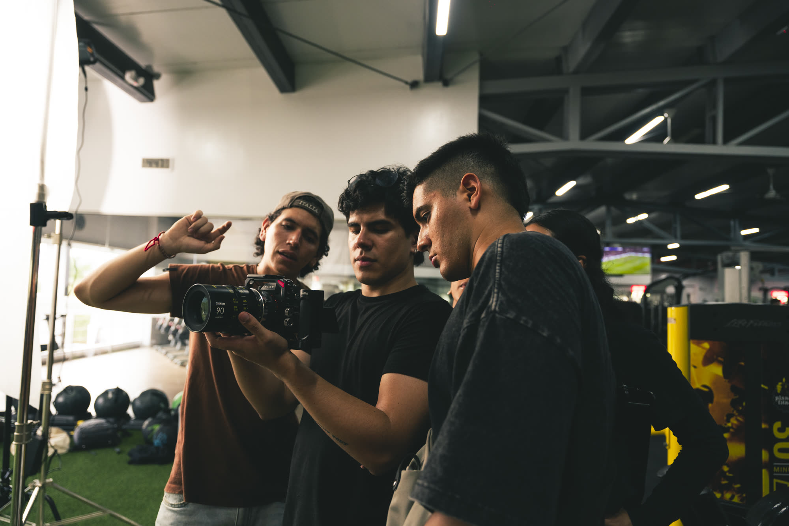

El cine como ejercicio de creación: una forma de observar, respirar y hacer visible lo
invisible.
00
HV / perfil
Director y editor audiovisual
Perfil
Soy estudiante de Cine y Comunicacion Digital, director y editor audiovisual en Cali,
Colombia. Trabajo desde una mirada cinematografica centrada en atmosfera, ritmo,
luz y presencia. Me interesa construir imagenes que sostengan una experiencia sensible
y que permitan leer el mundo desde el encuadre.
Rol principal
Direccion, edicion, montaje, fotografia de apoyo y desarrollo visual de proyectos.
2026 / Casino Marco Polo. Campaña audiovisual dirigida para el casino: visualizers
y una pieza promocional con pulso de cortometraje, entre brillo, juego y tensión.
En finalización, aprobación de cliente y publicación.
02
Rojo profundo
Color, encuadre y microficción documental

2026 / Rojo profundo. Exploración dirigida desde el color y el encuadre dentro
de una microficción documental: un gesto mínimo sostenido por luz, sombra y respiración.
En postproducción.
03
Teatro de sombras
Exploración visual del marco creativo Siento

2026 / Teatro de sombras. Pieza dirigida como parte de Siento, el mismo marco creativo
de Rojo profundo: una búsqueda de color, encuadre y presencia antes de la palabra.
En postproducción.
04
Peregrinaje
Documental institucional en proceso

2026 / Peregrinaje. Documental dirigido para el Colegio ALAS de Jamundí: cuerpos
caminando contra el horizonte, una imagen de fe, cansancio y movimiento colectivo.
En finalización y posible grabación de material complementario.
05
Quién soy
Construir una imagen con otros

Soy director y editor. Exploro la imagen como materia sensible:
luz, tiempo y presencia.
Me interesan las atmósferas, las tensiones sutiles y las narrativas que aparecen
desde lo visual antes que desde lo explícito. Cada proyecto lo abordo como un ejercicio
de observación y construcción, donde la emoción encuentra su forma en el encuadre.
Mi práctica se mueve entre el cine, la fotografía y un lenguaje editorial más cercano
a un archivo visual que a una estructura comercial.


06
Reel de dirección y edición
Una selección de trabajos y fragmentos de imagen en movimiento
2026 / Reel de direccion y edicion. Fragmentos reunidos como una respiracion:
miradas, ritmos y atmosferas que sostienen una misma busqueda visual.
07
Nota de entrega
Proyecto Profesional Cinematografico
Este portafolio se presenta como version definitiva de Corte 4 para revision academica.
Integra HV, reel y una seleccion curada de trabajos visuales que muestran direccion,
tono, composicion, montaje y busqueda autoral.
La entrega esta pensada para revisar el perfil profesional y la coherencia del archivo
visual como evidencia de proceso, enfoque y proyeccion de trabajo.